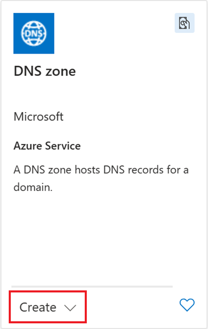
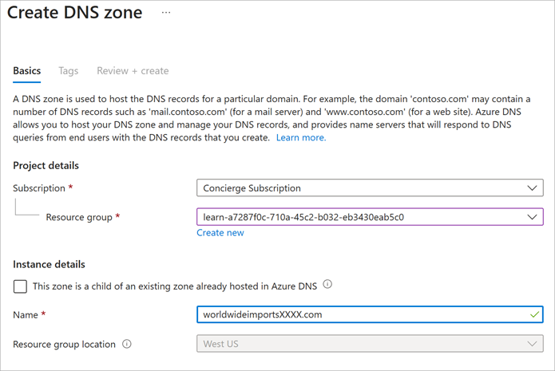
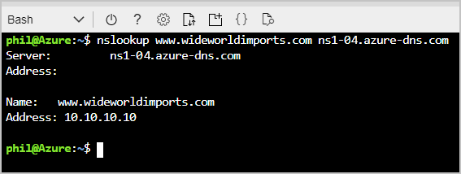

In the previous unit, we described setting up and configuring the wideworldimports.com domain to point to your Azure hosting on Azure DNS.
In this unit, you'll:
- Set up an Azure DNS and create a public DNS zone.
- Create an A record.
- Verify that the A record resolves to an IP address.
Create a DNS zone in Azure DNS
Before you can host the wideworldimports.com domain on your servers, you need to create a DNS zone. The DNS zone holds all the configuration records associated with your domain.
To create your DNS zone:
-
Sign in to the Azure portal with the account you used to activate the sandbox.
-
On the Azure home page, under Azure services , select Create a resource . The Create a resource pane appears.
-
In the Search services and marketplace search box, search for and select DNS zone by Microsoft. The DNS zone pane appears.
-
Select Create > DNS zone .

The Create DNS zone pane appears.
-
On the Basics tab, enter the following values for each setting.
Setting Value Project details Subscription Concierge subscription Resource group From the dropdown list, select [sandbox resource group] Instance details Name The name needs to be unique in the sandbox. Use wideworldimportsXXXX.com, and replace the "Xs" with letters or numbers.
-
Select Review + create .
-
After validation passes, select Create . It takes a few minutes to create the DNS zone.
-
When deployment is complete, select Go to resource . The Overview pane for your DNS zone appears.
-
Select Record Sets from the top menu bar.
By default, the NS and SOA record sets are automatically created whenever a DNS zone is created, and automatically deleted whenever a DNS zone deleted. The NS record set defines the Azure DNS namespaces and contains the four Azure DNS records. You use all four records when you update the registrar.
The SOA record represents your domain, and is used when other DNS servers are searching for your domain.
-
Make a note of the NS record values. You need them in the next section.
Create a DNS record
Now that the DNS zone exists, you need to create the necessary records to support the domain.
The primary record set to create is the A record. The A record set is used to point traffic from a logical domain name to the hosting server's IP address. An A record set can have multiple records. In a record set, the domain name remains constant, while the IP addresses differ.
-
If you're not already on the Record Sets screen, then open the DNS zone pane for wideworldimportsXXXX.com . In the top menu bar, select Record sets .
-
On the Record Sets pane, select + Add in the top menu bar.
-
Select Add at the top of the Record sets page.
The Add record set pane appears.
-
Enter the following values for each setting.
Setting Value Description Name www The host name that you want to resolve to an IP address. Type A The A record is the most commonly used. If you're using IPv6, select the AAAA type. Alias record set No This setting can only be applied to A, AAAA, and CNAME record types. TTL 1 The time to live, which specifies the period of time each DNS server caches the resolution before being purged. TTL unit Hours This value can be seconds, minutes, hours, days, or weeks. Here, you're selecting hours. IP Address 10.10.10.10 The IP address the record name resolves to. In a real-world scenario, you'd enter the public IP address for your web server. -
Select Add to add the record to your zone.
{kind=link}
It's possible to have more than one IP address set up for your web server. In that case, you add all the associated IP addresses as records in the A record set. After the record set is created, you can update it with more IP addresses.
Verify your global Azure DNS
In a real-world scenario, after you create the public DNS zone, you update the NS records of the domain-name registrar to delegate the domain to Azure.
Even though we don't have a registered domain, it's still possible to verify that the DNS zone works as expected by using the
nslookup
tool.
Use nslookup to verify the configuration
Here's how to use
nslookup
to verify the DNS zone configuration.
-
Use Cloud Shell to run the following command. Replace the DNS zone name with the zone you created, and replace
<name server address>with one of the NS values you copied after you created the DNS zone.Bashnslookup www.wideworldimportsXXXX.com <name server address>The command should look something like the following example:
Bashnslookup www.wideworldimportsXXXX.com ns1-04.azure-dns.com -
You should see that your host name
www.wideworldimportsXXXX.comresolves to 10.10.10.10.
Congratulations! You successfully set up a DNS zone and created an A record.